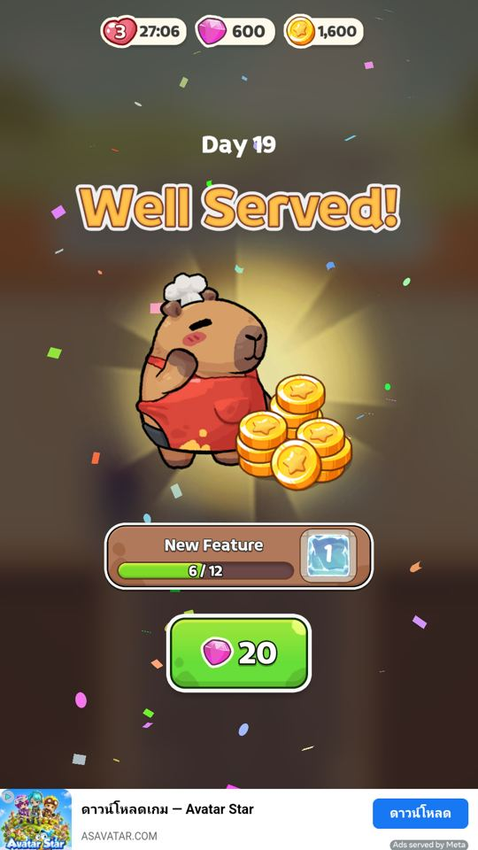
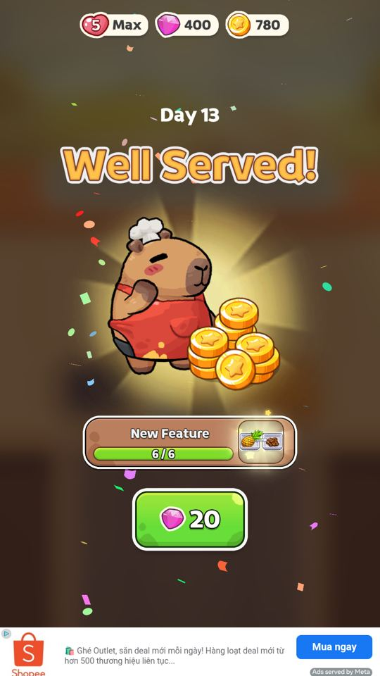

Giới thiệu tính năng mới (New Feature x/N)
Mô tả
- Game báo trước thứ mới sắp gặp bằng thanh "New Feature x/N" trên màn thắng: icon là tính năng kế tiếp (khối băng, ổ khoá, nhà hàng...), thanh đầy dần mỗi Day thắng, và khi sắp tới level đó thanh đầy, nút bấm được để xem popup giải thích kèm bản xem trước level.
- Ngoài ra khi vào level lần đầu có cơ chế / nguyên liệu mới, game bật popup giới thiệu theo chuỗi (cơ chế lưới, cơ chế ô, Linked, Combined, nguyên liệu mới), mỗi popup chỉ hiện một lần (cờ PlayerPrefs). Booster mới có popup nhận riêng.
- Thanh cũng đếm tới nhà hàng mới: sau Day 20 của map, thanh "New Restaurant" chạy tới Day 31 (level ngoài 30 bắt buộc) để dẫn người chơi sang map kế.
- Các cơ chế được giới thiệu có trang riêng: Hidden Item, Linked Items, Ice Block, Color Lock, Frozen Slot, Duplicate Food, Dirty Dishes, Conveyor, Multi-piece Dishes.
Thiết kế chi tiết
Tóm tắt thiết kế
- Code Thanh "New Feature" đếm ngược tới tính năng kế tiếp và nút chỉ bấm được khi level kế chính là level giới thiệu: người chơi luôn biết "sắp có thứ mới".
- Playtest Day 13 thắng: 6/6 (Linked ở Day 14). Day 14: 1/12 với icon khối băng. Day 15-19: 2/12-6/12.
- Code Có hai lớp giới thiệu: thanh + popup ở màn thắng (báo trước, có xem trước level) và popup intro ở đầu level (giải thích 1 lần, chuỗi lưới -> ô -> Linked -> Combined -> nguyên liệu).
- Code Mốc nhà hàng mới dùng chính thanh này: sau Day 20 thanh đếm tới Day 31, dẫn sang map kế.
- Code Cấu hình dùng khoá chuỗi (
Slot-Linked,Grid-ColorLock,Restaurant-sushi...) nên thêm cơ chế mới chỉ cần thêm 1 mục dicFeather + prefab intro. - Nhận định Mẫu số 12 cho thấy các cơ chế mới cách nhau nhiều Day ở đầu game để giữ nhịp học (6 Day -> 12 Day).
Luồng người chơi từng bước
- Thắng levelNgười chơi PlaytestMàn thắng hiện thanh "New Feature x/N" + icon tính năng kế.

Màn thắng Day 14: "New Feature 1/12", icon khối băng số 1 (tính năng kế tiếp) - Thanh đổ dầnGiao diện PlaytestMỗi Day thắng +1 (Day 14: 1/12, Day 19: 6/12).

Màn thắng Day 19: "New Feature 6/12" - Thanh đầyGiao diện PlaytestLevel kế là mốc: 6/6, nút bấm được.

Màn thắng Day 13 (bản 1.15, 16/11): "New Feature 6/6" đầy, icon Linked (dứa + hạt cà phê); nút gem 20 - Bấm xem popupNgười chơi Code
UIPopupNewFeathergiải thích + xem trước level. - Vào level mớiHệ thống CodePopup intro cơ chế bật 1 lần, đặt cờ PlayerPrefs.


Cơ chế được giới thiệu (UINewFeartherConfig, APK) và trang liên quan
| Khoá | Tên hiển thị | Mô tả (tiếng Anh trong game) | Trang |
|---|---|---|---|
| Grid-OrderLock | Ice Block | Serve a number of customers to break the ice block on the table. | Ice Block |
| Grid-ColorLock | Lock & Key | Find the key somewhere in the ingredient queues to unlock. | Color Lock |
| Slot-Freeze | Frozen Item | Frozen ingredients can't be picked. Pick up a nearby item to break the ice. | Frozen Slot |
| Slot-Hidden | Hidden Item | Hidden items are revealed only when they reach the top row. | Hidden Item |
| Slot-Linked | Linked Items | Pick linked slots together once every linked slot reaches the front. | Linked Items |
| Slot-Combined | Food Bundle | These foods move and are picked together as one block. | Duplicate Food (Combined, tên hiển thị "Food Bundle") |
| (prefab IntroMechanic-DupleFood) | - | không có mục trong dicFeather | Duplicate Food (suy luận) |
| (không có) | - | không thấy intro | Dirty Dishes, Conveyor |
Nguồn: giải mã UINewFeartherConfig (Odin) và danh sách prefab intro.
Mốc New Feature thấy khi chơi burger (Playtest)
| Sau khi thắng | Thanh | Icon | Ý nghĩa |
|---|---|---|---|
| Day 13 | 6 / 6 | Linked (dứa + cà phê) | Day 14 giới thiệu Linked Items (suy luận từ icon) |
| Day 14 | 1 / 12 | Khối băng | Tính năng kế ở Day 26 (suy luận) |
| Day 15 | 2 / 12 | Khối băng | - |
| Day 16 | 3 / 12 | Khối băng | - |
| Day 17 | 4 / 12 | Khối băng | - |
| Day 18 | 5 / 12 | Khối băng | - |
| Day 19 | 6 / 12 | Khối băng | - |
Nguồn: RESULTS_LIVE.md và ảnh trong thư mục NewFeatureIntro.
Chuỗi popup intro ở đầu level (Code)
| Thứ tự | Popup | Điều kiện | Cờ lưu |
|---|---|---|---|
| 1 | Intro cơ chế lưới | Level có Ice Block / Color Lock | IntroGridMechanic_{0} |
| 2 | Intro cơ chế ô | Level có Frozen / Hidden | IntroSlotMechanic_{0} |
| 3 | Intro Linked | IsHaveLinkedSlotGroups | IntroLinkedSlot |
| 4 | Intro Combined | IsHaveCombinedSlotGroups | IntroCombinedSlot |
| 5 | Nguyên liệu / món mới | Có item mới | IntroIngredient_... |
Nguồn: UIInLevelCakeOrder.ShowTutorial và các hàm con TryShowNext....
Vận dụng cho game khác
- Dùng thanh đếm ngược tới tính năng kế ở màn thắng để tạo kỳ vọng và nhịp học; nút chỉ mở khi sắp tới level giới thiệu.
- Tách báo trước (màn thắng) và giải thích (đầu level, một lần) để không bắt người chơi đọc khi đang chơi.
- Cấu hình giới thiệu bằng khoá chuỗi + prefab để thêm cơ chế mới không cần sửa code.
Bảng tổng hợp mọi tính năng đã làm chi tiết: FoodiePop_ThietKeChiTiet.xlsx.
Mở khóa & điểm vào
Thanh hiện trên màn thắng khi level kế có cơ chế / dụng cụ mới hoặc là mốc nhà hàng (UINextFeatherButton.UpdateFeatureAvailable -> UIPopupNewFeather.TryGetNewToolMilestones). Thanh "New Restaurant" chỉ chạy sau khi đã thắng Day 20 trong map (minWonLevelShowRestaurant = 20) và khi map kế không phải Preview (IsNextMapPreview).
Điểm vào:
- Thanh "New Feature x/N" ở màn thắng (prefab
UIPopup-EndGame-Win, nútUINextFeatherButton) - Popup giải thích khi bấm nút lúc thanh đầy (
UIPopupNewFeather) - Popup giới thiệu cơ chế tự bật ở đầu level (
UIInLevelCakeOrder.ShowTutorial) - Popup booster mới (
UIPopupNewBooster), popup món / nguyên liệu mới (UIPopupNewItem)
Cách hoạt động
- Thắng level: màn thắng dựng
UINextFeatherButton;UpdateFeatureAvailabletìm mốc trước/sau của tính năng mới trong map (TryGetNewToolMilestones). - Tính tiến độ: tử số = số Day đã thắng kể từ mốc trước + 1, mẫu số = khoảng cách tới mốc kế (
"{0} / {1}"). Playtest: Day 14 thắng hiện 1/12, Day 19 thắng hiện 6/12. - Icon lấy từ dụng cụ / cơ chế mới (
GetToolIcon,UINewFeartherConfig); hoạt ảnh đổ thanh (PlayFillAnim,SetFill). - Khi level kế chính là mốc (
_isReady): nhãn đổi (SetNewLabel, "New Restaurant" nếu là mốc nhà hàng), nút bấm được; bấm ->ShowPopupmởUIPopupNewFeathergiải thích và xem trước level (NewToolLevelPreview.BuildLevelInitData). - Vào level mới:
UIInLevelCakeOrder.ShowTutorialchạy chuỗi popup giới thiệu (lưới -> ô -> Linked -> Combined -> nguyên liệu mới), đặt cờIntroGridMechanic_{0}/IntroSlotMechanic_{0}/IntroLinkedSlot/IntroCombinedSlot/IntroIngredient_...khi xong. - Booster mới: tutorial booster gọi
UIInLevelCakeOrder.ShowPopupNewBoostervới nút claim / OK.
Ảnh chụp
Bấm ảnh để phóng to, dùng phím ← → để chuyển ảnh. Nhãn màu cho biết nguồn bằng chứng của ảnh.
Phần thưởng
| Ngữ cảnh | Phần thưởng | Evidence |
|---|---|---|
| Popup booster mới | Số lượng booster ghi trong tutorial (đọc từ UIPopupNewBooster._amount) | UIPopupNewBooster.SetData |
| Màn thắng có thanh New Feature | Nút claim gem (20 gem; 100 gem ở level Super Hard) cùng màn, không phải của thanh | RewardConfig.rwWinByDifficulty |
Số liệu chính
| Chỉ số | Giá trị | Nguồn |
|---|---|---|
| Số khoá tính năng trong UINewFeartherConfig | 16 (6 cơ chế + 10 nhà hàng) | dicFeather |
| Ngưỡng thanh nhà hàng | Day 20 thắng | minWonLevelShowRestaurant |
| Số cờ intro cơ chế / nguyên liệu | 5 loại khoá | UIInLevelCakeOrder |
| Booster | 6 loại | CakeCurrencySO Booster-* |
Use case (13)
Bấm vào từng use case để mở. Mở/đóng tất cả
UC-01 Thanh tiến độ tính năng mới
Các bướcUINextFeatherButton.UpdateFeatureAvailable tính (prev, next) bằng UIPopupNewFeather.TryGetNewToolMilestones
| Actor | System |
|---|---|
| Trigger | Dựng màn thắng |
| Điều kiện | Level kế có tính năng mới trong map |
| Kết quả | Chữ "{0} / {1}" và icon tính năng kế |
| Quy tắc / số liệu | Playtest: Day 13 -> 6/6 (icon Linked), Day 14 -> 1/12 (khối băng), Day 15-19 -> 2/12 ... 6/12 |
| Evidence | UINextFeatherButton.UpdateFeatureAvailable |
UC-02 Hoạt ảnh đổ thanh
Các bướcPlayFillAnim(from, to) + SetFill; xong gọi OnFillDone
| Actor | System |
|---|---|
| Trigger | Màn thắng hiện |
| Điều kiện | Có tiến độ |
| Kết quả | Thanh tăng 1 nấc, hiệu ứng sáng khi đầy |
| Quy tắc / số liệu | Tween bị huỷ khi tắt (KillFillAnim, OnDisable) |
| Evidence | UINextFeatherButton.PlayFillAnim |
UC-03 Thanh đầy: nút bấm được
Các bướcSetLockButtons(false) mở nút; nhãn "New Feature" hoặc "New Restaurant"
| Actor | System |
|---|---|
| Trigger | Level kế = mốc |
| Điều kiện | _isReady (levelIndex + 1 == mốc kế) |
| Kết quả | Người chơi bấm xem trước |
| Quy tắc / số liệu | Playtest Day 13: "New Feature 6/6" |
| Evidence | UINextFeatherButton.SetLockButtons |
UC-04 Bấm xem popup tính năng mới
Các bướcOnClick -> ShowPopup -> UIPopupNewFeather.Show(featherKey); Setup đọc NewFeatherConfig (tên, mô tả, icon)
| Actor | Player |
|---|---|
| Trigger | Bấm nút khi thanh đầy |
| Điều kiện | Có UIPopupNewFeather asset và SceneMainUI |
| Kết quả | Popup mô tả (ví dụ "Linked Items: Pick linked slots together once every linked slot reaches the front.") |
| Quy tắc / số liệu | Thiếu asset / scene: log "no UIPopupNewFeather asset or SceneMainUI, can't show the new tool popup."; đóng popup gọi OnPopupClosed |
| Evidence | UINextFeatherButton.ShowPopup |
UC-05 Xem trước level mới
Các bướcBuildLevelInitData dựng dữ liệu level kế (bảng, hàng đợi nguyên liệu) từ level design; khoá Slot-Linked, Slot-Combined, Slot-{0}
| Actor | Player |
|---|---|
| Trigger | Popup tính năng mở |
| Điều kiện | Có NewToolLevelPreview |
| Kết quả | Minh hoạ trực quan tính năng ở level kế |
| Quy tắc / số liệu | Lỗi dựng: log "Cannot build preview of {0} level {1}: {2}" |
| Evidence | NewToolLevelPreview.BuildLevelInitData |
UC-06 Dẫn tới nhà hàng mới
Các bướcGetRestaurantMilestone (theo numRequiredLevels), GetNextMapId, FindRestaurantConfig
| Actor | System |
|---|---|
| Trigger | Thắng level sau Day 20 của map |
| Điều kiện | Level kế có IsRestaurantMilestone và map kế không Preview |
| Kết quả | Thanh đếm tới nhà hàng kế, nhãn "New Restaurant" |
| Quy tắc / số liệu | Bị ẩn khi IsNextMapPreview hoặc chưa thắng quá minWonLevelShowRestaurant (20) |
| Evidence | UIPopupNewFeather.IsRestaurantMilestone |
UC-07 Popup "nhà hàng mới" sau khi thắng Day 30
Các bướcUIPopupNewFeather.SetupNextLevel chọn khoá Restaurant-<mapId>
| Actor | System |
|---|---|
| Trigger | Thắng level mở nhà hàng |
| Điều kiện | TryGetRestaurantOpenedByWonLevel trả map kế |
| Kết quả | Popup "New Restaurant" + tên map (NewFeatureRestaurant.SetUp) |
| Quy tắc / số liệu | Có cấu hình cho 10 map: coffee, sushi, pasta, icecream, sandwich, seafood, tteokbokki, dimsum, pizza, bento (không có burger, croissant) |
| Evidence | UIPopupNewFeather.TryGetRestaurantOpenedByWonLevel |
UC-08 Intro cơ chế lưới
Các bướcUIInLevelCakeOrder.ShowTutorial -> TryShowNextIntroGridMechanics mở prefab UIPopup-IntroMechanic-Grid-OrderLock / Grid-ColorLock, SetDoneIntroNewGridMechanic
| Actor | System |
|---|---|
| Trigger | Vào level có Ice Block / Color Lock lần đầu |
| Điều kiện | Chưa có cờ IntroGridMechanic_{0} |
| Kết quả | Popup giải thích 1 lần |
| Quy tắc / số liệu | Prefab là Addressables (IntroNewGridMechanicsConfig.assetIntroNewObstacle) |
| Evidence | UIInLevelCakeOrder.SetDoneIntroNewGridMechanic |
UC-09 Intro cơ chế ô nguyên liệu
Các bướcTryShowNextIntroSlotMechanics mở Slot-Frozen / Slot-Hidden, SetDoneIntroNewSlotMechanics
| Actor | System |
|---|---|
| Trigger | Vào level có Frozen / Hidden lần đầu |
| Điều kiện | Chưa có cờ IntroSlotMechanic_{0} |
| Kết quả | Popup giải thích 1 lần |
| Quy tắc / số liệu | Cùng cơ chế với UC-08 |
| Evidence | UIInLevelCakeOrder.SetDoneIntroNewSlotMechanics |
UC-10 Intro Linked và Combined
Các bướcMở Link-Slot rồi IntroCombinedSlot; cờ IntroLinkedSlot, IntroCombinedSlot
| Actor | System |
|---|---|
| Trigger | Vào level có nhóm ô Linked / Combined |
| Điều kiện | IngredientQueueInLevel.IsHaveLinkedSlotGroups / IsHaveCombinedSlotGroups |
| Kết quả | Popup 1 lần mỗi loại |
| Quy tắc / số liệu | Chuỗi nối tiếp: grid -> slot -> linked -> combined -> nguyên liệu mới |
| Evidence | UIInLevelCakeOrder.IsDoneIntroLinkedSlotMechanics |
UC-11 Intro nguyên liệu / món mới
Các bướcTryShowNextIntroNewIngredient -> SceneMainUI.ShowPopupInfoNewItem(itemInfos, amounts) -> UIPopupNewItem.SetData / ShowNextItem (lần lượt từng món)
| Actor | System |
|---|---|
| Trigger | Level có nguyên liệu mới |
| Điều kiện | Chưa có cờ IntroIngredient_... |
| Kết quả | Popup món mới (icon, tên, mô tả), SetDoneIntroNewItem đặt cờ |
| Quy tắc / số liệu | Sau cùng ShowAlert -> ShowPopupAlert |
| Evidence | SceneMainUI.ShowPopupInfoNewItem |
UC-12 Nhận booster mới
Các bướcInGameUITutorialProcessBooster.TakeReward -> UIInLevelCakeOrder.ShowPopupNewBooster -> UIPopupNewBooster.SetData, tải hoạt ảnh booster (LoadAnimAsync)
| Actor | Player |
|---|---|
| Trigger | Tutorial booster trao booster đầu tiên |
| Điều kiện | Tới Day mở booster (lvShowBooster = 3) |
| Kết quả | Popup tên + mô tả + số lượng, nút claim (btn_claim) rồi OK (btn_ok) |
| Quy tắc / số liệu | Hoạt ảnh không tải được: log "Booster animation ... did not load" |
| Evidence | UIInLevelCakeOrder.ShowPopupNewBooster |
UC-13 Nút thanh bị khoá / ẩn
Các bướcUpdateFeatureAvailable trả false
| Actor | System |
|---|---|
| Trigger | Không có tính năng mới phía trước |
| Điều kiện | TryGetNewToolMilestones = false hoặc map kế Preview |
| Kết quả | Không hiện thanh |
| Quy tắc / số liệu | Map cuối chưa có map kế -> không có thanh nhà hàng |
| Evidence | UINextFeatherButton.IsNextMapPreview |
Cấu hình (11)
Gộp mọi nguồn: const trong code, giá trị mặc định trong APK, storage key, AB test, cờ server.
| Nguồn | Key | Kiểu | Giá trị | Ý nghĩa | Nơi định nghĩa |
|---|---|---|---|---|---|
| asset | UINewFeartherConfig.dicFeather | dict | Grid-OrderLock, Grid-ColorLock, Slot-Freeze, Slot-Hidden, Slot-Linked, Slot-Combined + Restaurant-<map> x10 | Cấu hình từng tính năng (prefab, dụng cụ, tên, mô tả, khoá text, icon) | Assets/MonoBehaviour/UINewFeatureConfigObstacle.asset |
| code const | UINewFeartherConfig.LinkedSlotObstacleKey / CombinedSlotObstacleKey | string | Slot-Linked / Slot-Combined | Khoá đặc biệt cho Linked, Combined | UINewFeartherConfig |
| code const | UINewFeartherConfig key format | string | Restaurant-{mapId}, Grid-{type}, Slot-{status}, {mapId}_{levelIndex} (khoá dụng cụ mới) | Định dạng khoá tra cứu | RestaurantKey, GridObstacleKey, SlotObstacleKey, NewToolKey |
| asset | UINextFeatherButton.minWonLevelShowRestaurant | int | 20 | Thanh nhà hàng chỉ chạy sau khi thắng quá Day 20 trong map | UIPopup-EndGame-Win.prefab |
| storage key | Intro PlayerPrefs keys | int | IntroGridMechanic_{0}, IntroSlotMechanic_{0}, IntroLinkedSlot, IntroCombinedSlot, IntroIngredient_(...) | Cờ đã xem popup intro (0/1) | UIInLevelCakeOrder |
| asset | IntroNewGridMechanicsConfig / IntroNewIngredientSlotMechanicsConfig | list | assetIntroNewObstacle (Addressables) | Danh sách prefab intro theo cơ chế | UIInLevelCakeOrder._introNewGridConfigs, _introNewObstacleConfigs |
| asset | Prefab intro | prefab | UIPopup-IntroMechanic-_BASE + variant: DupleFood, Grid-ColorLock, Grid-OrderLock, Link-Slot, Slot-Frozen, Slot-Hidden; UIPopup-IntroNewBooster; UIPopup-IntroNewIngredients; UIPopup-NewFeature | Bộ popup giới thiệu | Assets/_Production/Map-common_assets/Prefabs/UI/InGame |
| text key | Locale new_feature / new_restaurant / new_restaurant_coming | string | New Feature / New Restaurant / A new restaurant is coming! | Nhãn thanh và popup | UI_InGame |
| text key | Locale ice_block, lock_key, frozen_item, hidden_item, linked_items, food_bundle | string | Ice Block, Lock & Key, Frozen Item, Hidden Item, Linked Items, Food Bundle | Tên tính năng | UI_InGame |
| text key | Locale btn_claim / btn_ok | string | Claim / OK | Nút popup booster mới | UI_Common |
| asset | CakeCurrencySO booster | list | booster_auto_cook, booster_clean_dirty, booster_ingredient_pick, booster_refill_wait_time, booster_shift_up_row, booster_stack_box | 6 booster trong game | Data/config/CakeCurrencySO__Booster-*.json |
Backend / server
| Command | Chiều | Mục đích |
|---|---|---|
Không có lệnh server riêng | - | toàn bộ chạy cục bộ; mốc tính từ level design đóng gói |
Giao diện (UI)
| Element | Class | Mục đích |
|---|---|---|
| Thanh + nút "New Feature" | TrungKien.UI.NewFearther.UINextFeatherButton | tiến độ, icon, nút xem popup |
| Popup tính năng mới | TrungKien.UI.NewFearther.UIPopupNewFeather | giải thích + xem trước level |
| Icon nhà hàng mới | TrungKien.UI.NewFearther.NewFeatureRestaurant | tên map trong popup |
| Popup món / nguyên liệu mới | CakeOrder.InGame.UIPopupNewItem | danh sách món lần lượt |
| Popup booster mới | CakeOrder.InGame.UIPopupNewBooster | booster + claim |
| Popup giới thiệu cơ chế | CakeOrder.InGame.UIPopupIntroNewMechanics | khung chung của các variant intro |
Analytics (1)
| Event | Tham số | Khi nào |
|---|---|---|
Không thấy sự kiện riêng cho New Feature | - | - |
Storage keys
IntroGridMechanic_{0} IntroSlotMechanic_{0} IntroLinkedSlot IntroCombinedSlot IntroIngredient_...
Còn thiếu / chưa xác minh
- Chưa tìm thấy chỗ kích hoạt popup
UIPopupIntroNewMechanicscho biến thểDupleFood(không có trongdicFeathervà_introNewGridConfigsđọc được); chưa quét Addressables. - Dirty Dishes và Conveyor không có mục nào trong
UINewFeartherConfighay prefab intro tương ứng: chưa thấy popup giới thiệu cho hai cơ chế này. - Mẫu số "12" ở playtest suy ra mốc kế là Day 26; chưa xác nhận bằng cách chơi tới Day 26 (đang là khối băng theo icon).
- Chưa đọc
TryGetNewToolMilestones/BuildNewToolDictđủ để liệt kê mọi mốc của 11 map; bảng chỉ có mốc thấy khi chơi (Day 13-19 burger). - Popup intro biến thể
DupleFoodchưa tìm thấy chỗ kích hoạt; "Food Bundle" là tên hiển thị của nhóm Combined (Slot-Combined), xem trang Duplicate Food.
Tính năng liên quan
Ô ẩn (Hidden Item, token #2) Món liên kết (Linked Items, nhóm `$` thứ hai) Khối băng theo đơn (Ice Block, Grid-OrderLock) Khoá màu và chìa (Lock & Key, Grid-ColorLock) Ô đóng băng (Frozen Item, token #1:n) Món đôi / bó món (Food Bundle, nhóm `$` thứ nhất) Đĩa bẩn (Dirty Plate / Dirty Stack) Băng chuyền nguyên liệu (ConveyorGrid) Món nhiều phần (Bento, Pizza, Dimsum, Pasta) Booster trong màn Hướng dẫn trong màn Day, map và mở nhà hàng Luồng màn: vào, thắng, thua Định dạng level, độ khó & thống kê
Nguồn đã đọc
_analysis/code/decompiled/Assembly-CSharp/TrungKien.UI.NewFearther.UINextFeatherButton.c_analysis/code/decompiled/Assembly-CSharp/TrungKien.UI.NewFearther.UIPopupNewFeather.c_analysis/code/stubs/Assembly-CSharp/TrungKien.UI.NewFearther.*.cs_analysis/code/decompiled/CakeOrder/CakeOrder.InGame.UIInLevelCakeOrder*.cData/config/UINewFeartherConfig.json (Odin bytes giải mã khoá và chữ)Assets/_Production/Map-common_assets/Prefabs/UI/InGame/UIPopup-EndGame-Win.prefab (minWonLevelShowRestaurant)Data/text/en-GB.json_analysis/live/fp_20261116/RESULTS_LIVE.md + ảnh lvl13/14/19